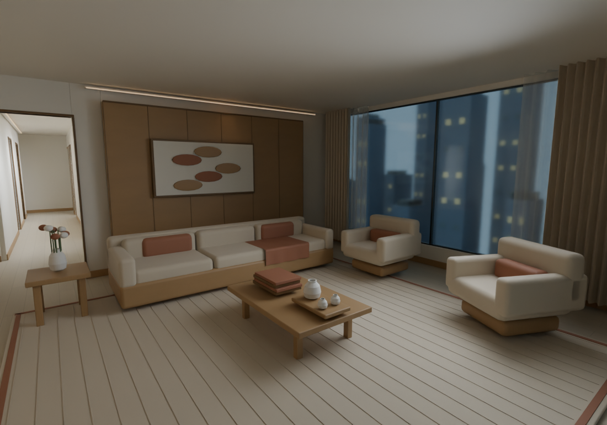
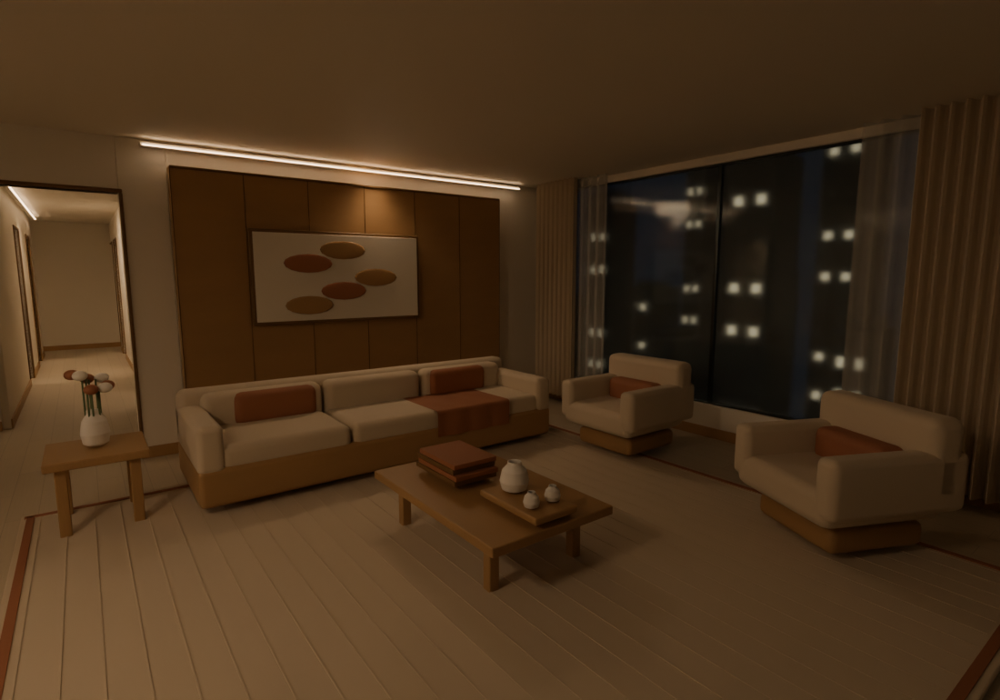
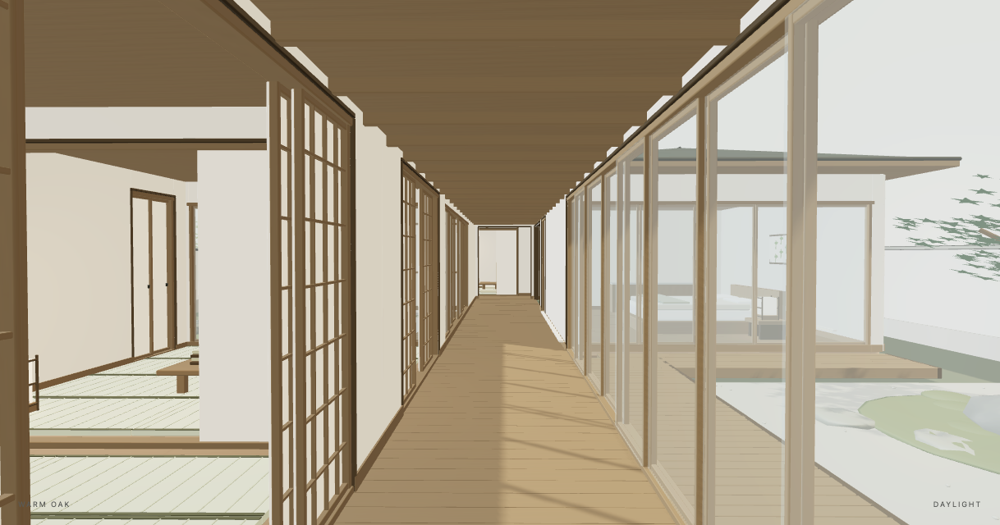

An apartment, made yours.
Nineteen modeled spaces. Move the furniture, change the finishes, adjust the light. Stable object identities keep the next edit connected to the last.

A LOCAL 3D AUTHORING PROTOTYPE
Speak an idea. Keep an editable scene.
Change your room in conversation, then see it take shape.
FOR CODEX + CLAUDE CODE · BLENDER + GLB
From photo references to an editable scene. Two consecutive edits, one persistent model.
Real scene edits and native renders, photo references, and labeled AI visualizations. Example voice commands are interpreted through an assistant; the local viewer does not include its own speech recognition. Some model details are custom scene work.
Start with a furnished example, or author a scene for a different home with your assistant.

Nineteen modeled spaces. Move the furniture, change the finishes, adjust the light. Stable object identities keep the next edit connected to the last.

Three open-to-sky gardens, tatami rooms and an engawa corridor. Slide a screen, explore a garden, or change a material without starting the scene again.
Your assistant handles the request. Local tools preserve the scene.
Type, or use voice input supported by your host assistant. Say what should move, what should change, and what should stay.
The assistant resolves objects and dimensions into a revision-checked patch. The browser previews the same saved scene file.
Continue from the last revision. Undo or redo, save your scene, then export an editable Blender or GLB model when ready.
“Make the island twenty centimetres wider. Keep the dining table.”
Voice is another way to talk to your assistant. Room as Code keeps the useful result: an editable scene with dimensions, material overrides, stable object IDs and a history you can return to. The preview has no separate model API.
Day and night are independent lighting choices on the same editable scene.
Python and a browser are enough for the bundled preview. No model key is needed to explore it.
git clone https://github.com/leiyang2003/room-as-code.git
cd room-as-code
python3 preview_samples.py --port 8765Python 3.10+ · WebGL2 browser · Blender 4.2+ for native export and renders
Install the room-studio skill into your Codex or Claude Code project. Your host supplies language understanding, voice input where available, and any model access.
Install the conversational skill →Yes, as references for a scene authored with your assistant. There is no automatic photo-reconstruction algorithm, and example dimensions are design assumptions rather than measurements.
Scene JSON with edit history, and editable Blender / GLB exports. Native procedural materials stay editable in Blender; GLB carries constant PBR colors and scalar properties rather than baked procedural textures.
Existing objects can be resized, moved, restyled, hidden and edited with undo/redo. New furniture families or complex custom geometry need generator work. Browser lighting approximates the native result. This is a design prototype, not a surveyed BIM or construction model.